通常ショット

ショットボタンを連打、もしくは連射ボタンの押しっぱなしで
遠方に向かってお箸を発射します。
後述するビールゲージの量に応じて火力が変わり、
それぞれ1.0, 1.8, 2.0, 2.8になると火力が変わります。
しかし後述する爪楊枝より火力が圧倒的に低いので
近づくとペナルティ弾を吐くボス戦だけを
通常ショットで立ち向かうことになります。
チャージショット

通常ショットボタンを押しっぱなしにすることで
自機の周囲に爪楊枝を展開します。
さらに、この状態で通常ショットボタンを放すと
自機周囲に展開されている爪楊枝がなくなり、
16フレームかけて自機から爪楊枝が発射されます。
この時完全にランダムな方向に発射されるのではなく、
上->真横->下という順番に発射されます。
さらに自機から発射される都合上、元々自機がいた周辺は空洞になりドーナツのような配置になることにも
注意が必要です。
さらに設置してから一定フレームたつと近くの料理に向かって飛んでいきます。
射程はすごく狭いのでそこまで信用しない方が良いでしょう。
この爪楊枝は火力が圧倒的に強く、使える場面では積極的に使うべきです。
通常クリアでも2ボスの五日前のソーダハイ、3ボスの通常2では使うことになるでしょう
スコアアタックだと道中や一部ペナルティ弾の中に入れるボスなどで使用されます。
ボム

ボムボタンを押すことで何かを発射します
ビールゲージ1Lを消費する前方近接攻撃です。
近づけば近づくほど火力が高くなりますが
無敵はボムのエフェクトが出てる瞬間しか存在しません。
ボム中にボスに重なってるとエフェクトがなくなった瞬間に被弾するので
早めに安全圏に下がるのが良いでしょう。
また、ボムを撃つとビールゲージの最大量が-0.1Lされてしまうので
ボムを撃ちすぎるとビールゲージが最大でもショット火力が最大ではないという状態が
起こりえます。
さらに被弾してもビールゲージは回復しないため、
通常クリア狙いで危ないシーンになっても決めボムポイントまでボムは撃たないといった戦略も
十分アリでしょう。
ビールゲージ
ビール、日本酒、もっきり、ワイン、カクテル系、ミラーボール
のいずれかを呑む(倒す)ことで増加します。
現れた料理は早く呑むとビールゲージの増加量が多いです。
時間
SOSOU(被弾)すると時間が経過してしまいますが、その時間は一定ではないことがわかっています。
なお詳しい原理はわかっていません。
メニューカテゴリ
このゲームのスコアアタックの肝であり醍醐味です。
いわゆるコンボで、敵を連続して倒すと商品ランクが上がり、
料理を食べた時の金額が上がります。
| 商品ランク | コンボ数 (食) |
| 並 | 0 |
| 上 | 3 |
| 特上 | 9 |
| 至高 | 17 |
価格表
| 商品名 | 画像 | 並 (円) | 上 (円) | 特上 (円) | 至高 (円) | タイプ |
| ビール樽 | 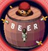 | 4500 | | | | |
| カクテルシェーカー | 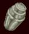 | 5700 | | | | |
| 大根 | 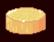 | 80 | 240 | 400 | 840 | A |
| 煮卵 | 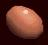 | 100 | 300 | 500 | 1050 | A |
| 豆腐 |  | 280 | 840 | 1400 | 2940 | A |
| かっぱ巻き | 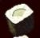 | 290 | 870 | 1450 | 3045 | A |
| 卵焼き | 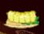 | 320 | 960 | 1600 | 3360 | A |
| 枝豆 | 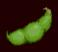 | 380 | 1140 | 1900 | 3990 | A |
| 納豆巻き | 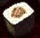 | 390 | 1170 | 1950 | 4095 | A |
| お通し | 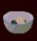 | 400 | 1200 | 2000 | 4200? | A? |
| 寿司 | 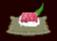 | 819 | 2457 | 4095 | 8600 | A |
| ピザ | 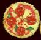 | 1100 | 3300 | 5500 | 11550 | A |
| チーズ | 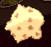 | 450 | 600 | 850 | 1250? | B? |
| 野菜スティック | | 450 | 600 | 850 | 1250 | B |
| シャーベット | 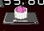 | 450 | 600 | 850 | 1250 | B |
| ビール | 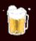 | 450 | 600 | 850 | 1250 | B |
| 日本酒 | 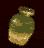 | 400 | 650 | 1200 | 1600 | C |
| もっきり | 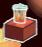 | 400 | 650 | 1200 | 1600 | C |
| 緑カクテル | 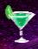 | 1200 | 3000 | 4500 | 6750 | D |
| 紫カクテル | 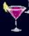 | 1200 | 3000 | 4500 | 6750 | D |
| 青カクテル | 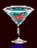 | 1500 | 3750 | 5625 | 8450 | D |
| オレンジカクテル | 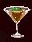 | 2000 | 5000 | 7500 | 11250 | D |
| ワイン | 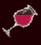 | 350 | 480 | 700 | 900 | E |
| ナッツ | 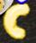 | 250 | 300 | 550 | 950 | F |
| 枝豆(3面) | | 0 | 0 | 0 | 0 | G |
| ミラーボール | 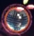 | 0 | 0 | 0 | 0 | G |
ただし『?』がついているものについては現行パターンでは当該商品ランクを出せないため、
推測で書かれているものです。
各タイプは以下のように並の価格を0としたときの会計倍率を表しています。
ただし青カクテルの至高は1500×5.625=8437.5円となるはずですが、
何故か切り上げ以上の金額である8450円となっています。
また、3面の枝豆は倒しても金額が出ませんがミラーボールは倒すと『￥0』という表示が出ることから
通常とは別の処理が入っているものと思われます。
| タイプ | 並 | 上 | 特上 | 至高 |
| A | 1 | 3 | 5 | 10.5 |
| B | 1 | 1.333 | 1.889 | 2.778 |
| C | 1 | 1.625 | 3 | 4 |
| D | 1 | 2.5 | 3.75 | 5.625 |
| E | 1 | 1.371 | 2 | 2.571 |
| F | 1 | 1.2 | 2.2 | 3.8 |
| G | NULL | NULL | NULL | NULL |
特別メニューの価格
特別メニューの価格はこのゲームのスコアアタックにおいてとても重要な要素です。
東方project作品においてスペルカードボーナスに相当するもので、
各ステージにて初期値が設定されており、時間経過で一定の割合で減少します。
それぞれ残り時間がちょうど0になった時に完食(撃破)すると5万になると思われます。
一次会: 20万円
二次会: 30万円
惨事会: 40万円
退店時の会計
消費税は5%
サービス料は以下の式をもとに計算されます。
(サービス料) = (退店時間から閉店時間までの時間[分]) ÷ N + (退店時のビールゲージ[L]) [%]
計算結果は小数第2位を四捨五入
Nの値はステージによって変わり、(一次会, 二次会, 惨事会) = (8, 6, 10)
深夜料金はステージによって変わり、(一次会, 二次会, 惨事会) = (0.0%, 10.0%, 20.0%)
置きボム
特別メニューはSOSOU(被弾)をするかボムを撃つとおつとめ品になってしまい価格が0円になってしまいます。
しかし特別メニューが始まる直前でボムを撃つと、
特別メニュー中にボムの攻撃判定があるのにおつとめ品にならないという現象が起こります。
これを一般に置きボムといいます。
いかに速く特別メニューを食べきる(撃破する)ことができるかがとても大事なゲームであるので
スコアアタックに置いてとても大事な要素といえるでしょう。
中避け

一部の弾幕を除き、ボスは近づくとペナルティ弾を放ってきます。
これによりボス戦は火力の低い通常ショットを用いて長い時間をかけて
料理を食べ(体力を削ら)ざるを得ません。
しかしペナルティ弾の発生源とボスの当たり判定の間に空間があるため、
置きボムの無敵中にその空間に入ることでボスに超接近した状態で
チャージショットを連打し、大食いする(大ダメージを与える)ことができます
これを中避けといいます。
一見すごく小さい範囲に見えますが案外位置合わせは簡単です。
ボスに近づくとボスにボムのエフェクトが吸われますが、
一定以上近づくとボムのエフェクトがすり抜けるようになります。
このボムエフェクトがボスをすり抜ける一番低い高さが安全地帯です。
ただしボムエフェクトがすり抜けるということは当然食べられていない(ダメージを与えられていない)ので
ギリギリまで中避けポイントに入らずにボムが終わる直前でポイントに入ると良いでしょう。
この中避けはどの特別メニューでもできるというわけではなく、以下の条件を満たしていることが必要です。
- ・ボスの中央から弾を放つような弾幕ではないこと
- ・ボスが移動しない弾幕であること
- ・撃破後にアルコール料理を出さない特別メニューであること(アルコール料理にも当然当たり判定があるため)
参考文献
こちらのサイトの情報を使用させていただいております。
むしろこのサイトが時々リンク切れ起こしていて見られないことが多々あったので
情報を移管するためにこのウェブページを作ったともいえる